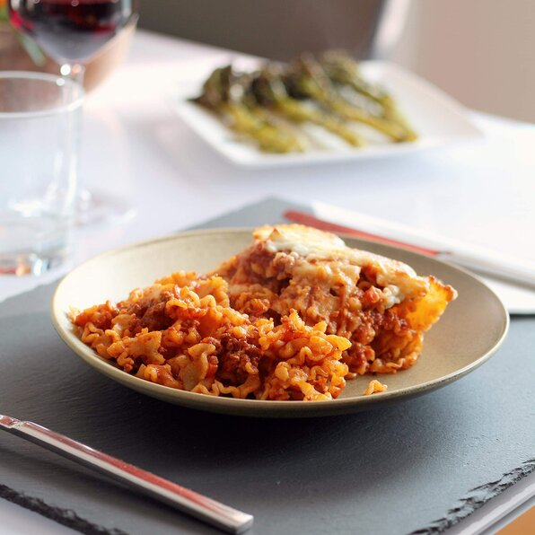

Lasagna

Description
This no-bake skillet lasagna is made right on your stovetop and is a fast and easy alternative to store-bought hamburger mixes!
Ingredients
- 1/2 pound ground beef
- 1/2 (28 ounce) jar spaghetti sauce
- 1 (14.5 ounce) can diced tomatoes
- 1/2 onion, chopped
- 1 clove garlic, minced
- 2 teaspoons dried basil (Optional)
- 2 teaspoons dried oregano (Optional)
- 1 teaspoon salt
- 1 teaspoon black pepper
- 2 cups dried mafalda noodles
- 1 cup shredded mozzarella cheese
Directions
- Heat a large skillet over medium-high heat.
- Cook and stir beef in the hot skillet until browned and crumbly, 5 to 7 minutes.
- Drain and discard grease.
- Add spaghetti sauce, tomatoes, onion, garlic, basil, oregano, salt, and pepper.
- Cook over low heat until sauce is hot, about 15 minutes.
- Meanwhile, fill a large pot with lightly salted water and bring to a rolling boil.
- Cook mafalda noodles at a boil until tender yet firm to the bite, about 8 minutes and then drain.
- Add cooked and drained noodles to the sauce and stir until completely coated. Sprinkle mozzarella cheese on top.
- Set an oven rack about 6 inches from the heat source and preheat the oven's broiler.
- Place skillet under the hot broil and cook until cheese is golden and bubbly, 3 to 5 minutes.
Cook's Note
You can use ground turkey in place of beef, if you like.
Home